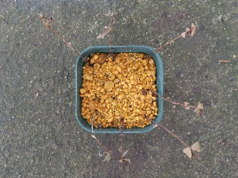
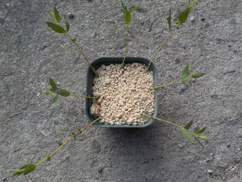
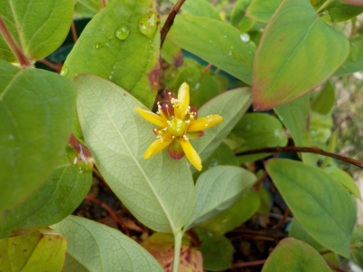
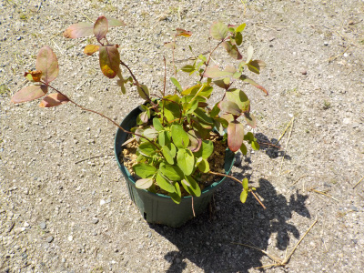
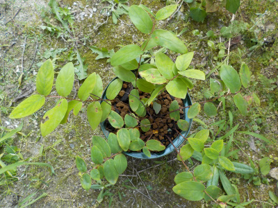
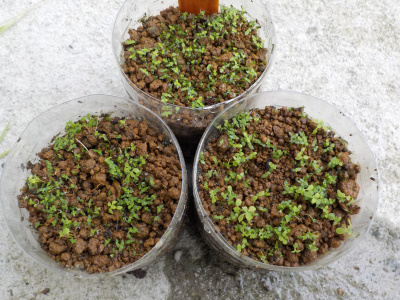
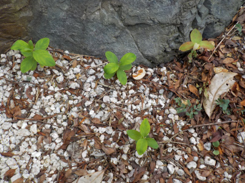
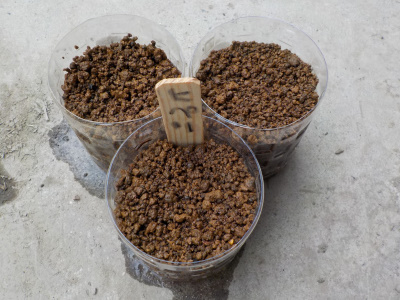
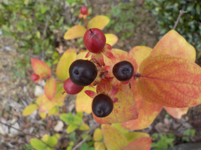

遊びで植物を育てよう
2024/06/09
ヒペリカムの挿し木は失敗しました。

ヒペリカムの挿し木は簡単にできると思っていたんですが、失敗しました。
何がいけなかったんだろう？
【ヒペリカムTOP】
【木TOP】
【園芸TOP】
2024/05/20
ヒペリカムの挿し木。

花束に入っていたものです。なんだか分からないので葉っぱを検索したらヒペリカムと出ました。
大きな花と大きな実が出来るタイプだといいんだけどな。
【ヒペリカムTOP】
【木TOP】
【園芸TOP】
2022/08/09
ヒペリカムが枯れました。

育てる気がなくなったら枯れました。
夏なので鉢物は目を離すと枯れますね。
【ヒペリカムTOP】
【木TOP】
【園芸TOP】
2022/06/12
ヒペリカムの花がとても小さかったです。

花が下に向かって咲いていたので、ひっくり返して写真を撮りました。
小さい花です。これはつまらない。育てがいがないです。
もうこのヒペリカムは育てるのをやめよう。この鉢には別のものを植えよう。
【ヒペリカムTOP】 【木TOP】 【園芸TOP】
2022/04/02
ヒペリカムをどうしようか考え中。

このヒペリカムは花も実もあんまり目立たない。
親株は目立っていたんだけどなー。
今年も地味だったら育てるのを止めようと思います。
【ヒペリカムTOP】 【木TOP】 【園芸TOP】
2021/07/31
ヒペリカムを大きい鉢に植え替えしました。

夏になって水分消費が多いため、鉢を大きくしました。
これで半日陰に置いておけば夏はのりきれるでしょう。
【ヒペリカムTOP】 【木TOP】 【園芸TOP】
2020/09/13
ヒペリカムが大量に発芽しました。

種を蒔いたら簡単に発芽しました。
しかも大量です。
こんなにいっぱいいらないです。どうしようかな。
メルカリで売れるといいけど、実生でなんだかわからない商品なんて販売できないな。
【ヒペリカムTOP】 【木TOP】 【園芸TOP】
2020/08/09
庭のヘピリカムを鉢に植え替えました。

実生の苗を鉢に植えました。
これを鉢に植えて観賞用になるかは不明です。
小ぶりの状態で花や実が出来るといいんですが、どうなる「でしょうね。
【ヒペリカムTOP】 【木TOP】 【園芸TOP】
2020/07/26
ヒペリカムの自生えが育っていました。

先日種蒔きしたヒペリカムですが、近くに実生苗が点々と育っていました。
去年落ちた種が育ったみたいです。
種蒔きなんてする必要なかったです。
これを使って小さい鉢物にしたいな。
【ヒペリカムTOP】 【木TOP】 【園芸TOP】
2020/07/18
ヒペリカムの種をまきました。

ヒペリカムの種を潰したら大量の種が入っていたので蒔きました。
ネットの情報では春に種蒔きするってあったんですが、種が沢山あるので何本かは成功するんじゃない？と思いまきました。
水の管理が面倒なのでペットボトルの密閉式でやってみます。
【ヒペリカムTOP】 【木TOP】 【園芸TOP】
2020/07/12
ヒペリカムの実が黒くなりました。

ヒペリカムっていうのかピペリカムっていうのかよくわからないですが、赤い実が黒くなりました。
種があるなら育てようかな。
でも梅雨に葉っぱが紅葉してるってなんか変ですよね。
花が咲いたのも5月くらいなのでヒペリカムじゃないかも。
これはこれで葉色が綺麗なので増やしてもいいかな。
【ヒペリカムTOP】
【木TOP】
【園芸TOP】
花も葉っぱも実も観賞できますね。
【おいしいものを食べよう。】【たくさん寝よう。】
【ソロ活をしよう!】【季節感のあることをしよう。】【動画視聴はほどほどに。】【当サイトの全てのコンテンツは無断転載禁止です。】